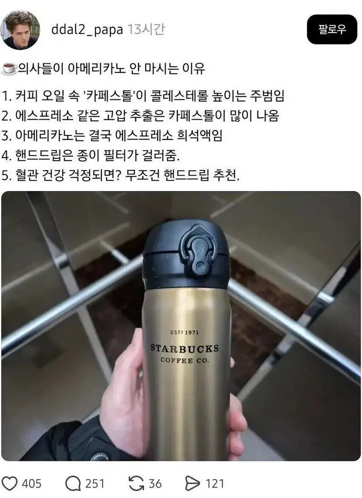
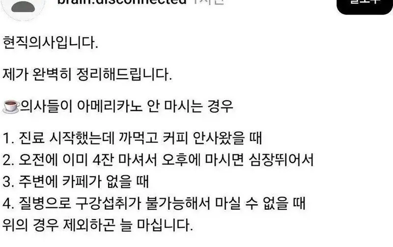

너무너무 피곤하면 퇴근하면서 사먹어도 잠이 와요...
안사먹으면 퇴근후 저녁이 삭제됨
건강염려증이 도를 넘은 사람들이 많음.
핸드드립 바이랄 ㅋㅋ
염려가 아님 걍 지가 어디서 듣고 아는거 하나 더 있다고 우빵잡는거지
그건 아님 카페스톨 부분은 입증된 데이터가 있는 부분임 솔직히 존나 건강한 사람은 문제없음
말라깽이 인간이 감튀 먹는다고 뒤지진 않을거잔아?
그런데 요즘같이 대사질환자가 늘어난 시점에서 보면
심혈관질환이나 대사질환이 있는 건강 안좋은 사람한텐 더 안좋게 부스팅해주는 역할함 ㅋ
결론은 안좋은게 쌓이고 쌓이고 여러개 중첩되니까 안좋은거지 건강한 사람은 저딴거 신경안쓰고 살아도되긴함 ㅋ
내가병원에서10년일하며커피안마시는사람을손가락으로꼽을수가잇을정도로적음 눈치보는 신입 제외
믹스는 어떰?
더 안 좋긴 하지 맛있자나 한잔해
설탕 조절
고기도 별로 안먹고, 살도 안쪘는데 콜레스테롤 높은 사람보면 커피 많이 마시더라.
일회용 드립백에 아메리카노 걸러서 먹으면 되는거 아님?
블랙 커피 순기능도 많은 거 아니었음?
의하하
제로 에너지음료랑 아메리카노 동일한 용량과 카페인 양이면 뭐가 더 안좋을까
스레드 단골 포스팅임
- 17년차 의사가 말해주는 절대 안먹는 안주들
- 13년차 안과의사 아빠가 말해주는 눈 건강템들
전부 읽어보면 영양제나 싸구려 제품 하나씩 껴있음
콜드브루는 무적이다
아메리카노 따윌 먹으니 ㅉㅉ
에스프레소용 필터가 있긴함
아메리카노를 종이필터에 걸러먹으면 되냐?
소아과만해도 진료실 테이블에 메가 아메리카노 젤큰거있더라 ㅋㅋ
일단 쟤는 의사 아닌 게 확실ㅋㅋㅋ
커피 먹으면서 그렇게까지 생각하는 의사가 1%는 될까
의사들 커피 ㅈㄴ 마심
아 그리고 콜레스테롤 염려되면 핸드드립이나 콜드브루도 괜찮지만 인스턴트 커피처럼 동결건조 분쇄시킨 제품도 괜찮음
카누같은거
내가 병원 방문할때마다 탁자위에 커피 없는 날을 본적이 없는데
야이 퇴근하면서 사먹으면 잠은 우예 잠